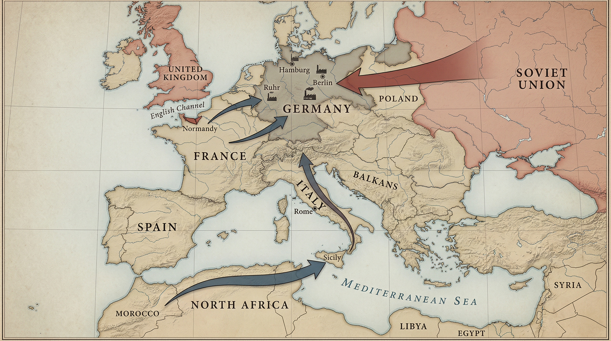
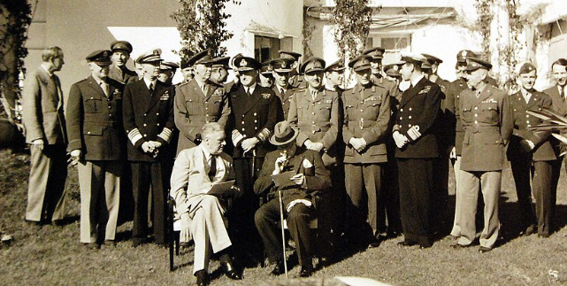
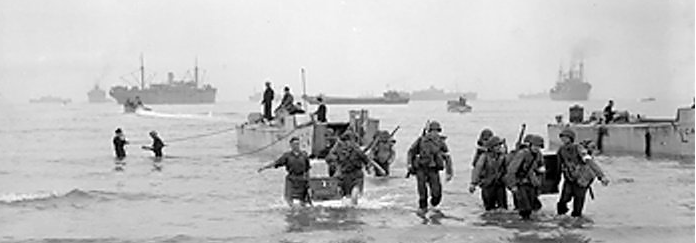
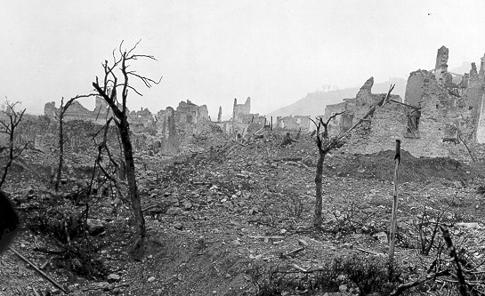
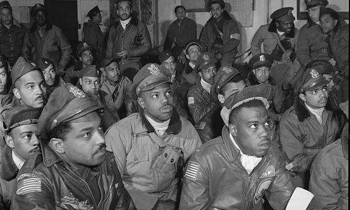
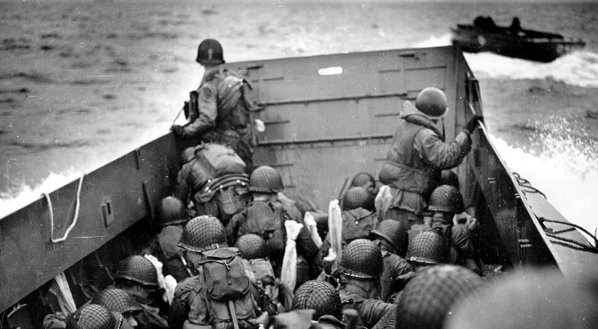
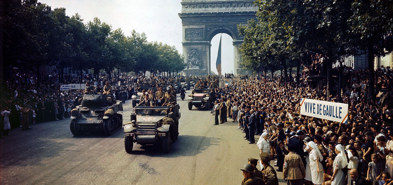
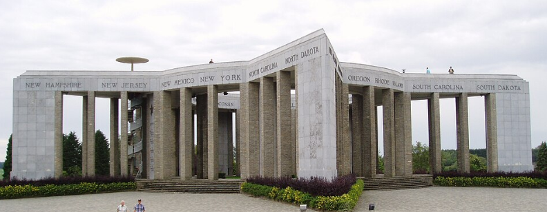
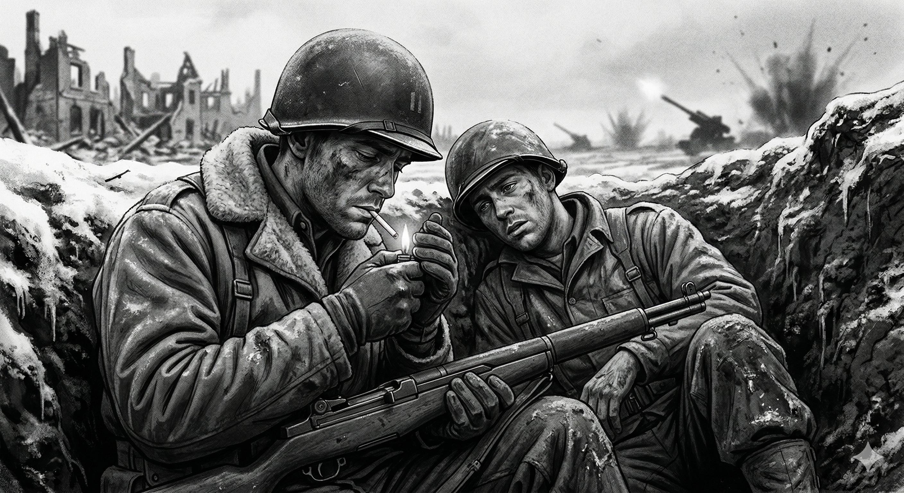

Core Objectives
- Analyze the strategic debate regarding the "Second Front" and the significance of the D-Day invasion (Operation Overlord).
- Trace the Allied advance from North Africa through Italy and across Western Europe to the defeat of Germany.
- Evaluate the leadership roles of Allied commanders and the impact of the air war on German industrial capacity.
Key Terms
European Theater | Dwight D. Eisenhower | Operation Torch | D-Day (Operation Overlord) | Battle of the Bulge | George S. Patton | Tuskegee Airmen | V-E Day | Harry S. Truman
Introduction: The Road to Liberation and the Defeat of Fascism
Following the attack on Pearl Harbor, the United States found itself thrust into a global conflict spanning two massive oceans and requiring unprecedented mobilization. Facing enemies on multiple continents, Allied leaders made the crucial strategic decision to prioritize the defeat of Nazi Germany, recognizing the existential threat posed by its immense industrial and military power. This chapter explores the grueling campaigns necessary to liberate occupied Europe, tracking the Allied advance from the deserts of North Africa and the mountains of Italy to the beaches of Normandy and the heart of the Third Reich. Through the leadership of key commanders, the courage of diverse fighting units, and the massive industrial output of the American "Arsenal of Democracy," the Allies slowly turned the tide of the war to secure a hard-fought victory.

The "Europe First" grand strategy prioritized the defeat of Nazi Germany due to its immense industrial capacity and existential threat to global security. By coordinating simultaneous advances from the Mediterranean, Western Europe, and the Eastern Front, the Allied powers systematically dismantled the Axis empire's borders and converged on the heart of the Third Reich.
Analysis Question: How did the geographical reality of a multi-front war dictate the strategic priorities and logistical challenges faced by the Allied powers?
Defining the Strategy
Before launching a direct assault on "Fortress Europe," the Allied powers had to agree on a unified strategy and gain critical combat experience. This section details the contentious debates between the "Big Three" leaders over the "Europe First" approach and the decision to attack the Axis empire's edges. By initiating operations in North Africa and slogging through the difficult terrain of Italy, American forces learned harsh but necessary lessons in modern warfare while strategically tying down elite German divisions. Concurrently, a relentless strategic bombing campaign in the skies over Germany began dismantling the Nazi war machine from above.
The Grand Strategy: Europe First
Following the shock of the attack on Pearl Harbor, the United States faced an immediate and daunting military dilemma. The nation was now engaged in a global conflict that spanned two massive oceans and involved multiple continents. However, President Franklin D. Roosevelt and his military advisors, in consultation with British Prime Minister Winston Churchill, made a critical strategic decision: they would prioritize the European Theater. This "Germany First" strategy was based on the belief that Nazi Germany, with its massive industrial capacity, advanced scientific research, and control over the heart of Europe, posed a far more significant existential threat to global security than Japan. If the Soviet Union or Great Britain were knocked out of the war, the Allies would lose their essential bases for any future counter-offensive.
Agreeing on the priority of the war in Europe was easier than agreeing on the method of victory. The "Big Three" leaders—Roosevelt, Churchill, and Joseph Stalin—were often at odds regarding military timing and geography. Stalin, whose Soviet armies were enduring the full weight of the German Wehrmacht, was desperate for the United States and Britain to launch an immediate invasion of Western Europe. He demanded a "Second Front" to force Adolf Hitler to divert divisions away from the Eastern Front, where Soviet soldiers and civilians were dying in astronomical numbers. Stalin grew increasingly suspicious of his Western allies, fearing that they were intentionally delaying the invasion to let the Germans and Soviets destroy each other, thereby weakening the Soviet Union for the post-war era.
Churchill, however, was haunted by the memories of the First World War and the horrific casualties suffered in the trench warfare of the Western Front. He was deeply reluctant to attempt a cross-channel invasion of France until the German military had been significantly weakened. He feared that a premature landing would result in a disaster that could effectively end the war in a single day. Instead, Churchill proposed a strategy of attacking the "periphery" or the edges of the Nazi empire. He referred to Southern Europe as the "soft underbelly" of the Axis. By attacking North Africa first, Churchill argued the Allies could gain combat experience, secure the Mediterranean, and support the British Empire's interests in the Middle East and India. Roosevelt ultimately agreed to this peripheral strategy, recognizing that the American "Arsenal of Democracy" needed more time to build the specialized ships, planes, and tanks required for a direct assault on "Fortress Europe."

Roosevelt, Churchill, and their military staffs gather at the Casablanca Conference in January 1943.
Why it Matters: This subsection focuses on the strategic debate over how to defeat Germany and when to open a true second front in Western Europe. A Casablanca planning photograph shifts the emphasis away from a generic “Big Three” portrait and toward coalition war planning, showing how Allied leaders had to balance production, timing, geography, and competing political priorities before committing to the liberation of Europe.
Student Question: How did Allied planning at Casablanca shape the decision to delay a cross-channel invasion and pursue a peripheral strategy first?
Checkpoint
1. Why was Joseph Stalin desperate for the United States and Britain to launch a "Second Front" in Western Europe?
Operation Torch and the North African Campaign
In November 1942, the United States launched its first major offensive in the West, known as Operation Torch. This was an ambitious amphibious invasion of Axis-controlled North Africa, specifically targeting Morocco and Algeria. The operation was led by General Dwight D. Eisenhower, a commander who would eventually become the supreme architect of the Allied victory in Europe. Eisenhower was chosen not just for his military tactical skill, but for his extraordinary ability to balance the competing political interests and massive egos of the British and American military high commands. His task was to transform a collection of inexperienced American units and veteran British forces into a single, cohesive fighting machine.
The campaign in North Africa served as a brutal and necessary school for the American soldier. Initially, U.S. troops were overconfident and lacked the tactical discipline required to fight a modern, mechanized army. In February 1943, at the Battle of Kasserine Pass in Tunisia, the Americans suffered a humiliating defeat at the hands of General Erwin Rommel’s "Afrika Korps." Rommel, known as the "Desert Fox," utilized superior tank tactics and air support to shatter the American lines. The defeat exposed significant flaws in American military leadership and equipment, leading to a major reorganization of the U.S. Army.
To restore discipline and offensive spirit, Eisenhower turned to General George S. Patton. Patton was a flamboyant, highly disciplined, and often controversial commander who believed that "speed and violence of action" were the keys to winning any battle. He demanded that his soldiers maintain a sharp military appearance even in the middle of a desert war and instilled a ferocity in his units that would become the hallmark of the American Third Army. Working alongside British General Bernard Montgomery, Patton helped drive the Axis forces back. By May 1943, the Allies had cornered the German and Italian armies in Tunisia, resulting in the surrender of nearly 250,000 Axis troops. This victory not only removed the threat to the Suez Canal but also provided the Allies with a springboard for the invasion of Italy.

American soldiers land on the North African coast during Operation Torch in November 1942.
Why it Matters: Operation Torch marked the first major American offensive in the European war and gave inexperienced U.S. forces crucial combat experience against Axis troops. The campaign also elevated Eisenhower’s leadership, exposed weaknesses in American tactics at Kasserine Pass, and positioned the Allies for the invasion of Italy.
Student Question: Why did Operation Torch matter as both a military test for American forces and a stepping stone toward later Allied victories in Europe?
Checkpoint
1. What was a significant outcome of the American defeat at the Battle of Kasserine Pass?
The Italian Campaign: The "Tough Old Gut"
Following the success in North Africa, the Allies launched an invasion of Sicily in July 1943. The rapid fall of the island led to a political collapse in Rome. The Italian people, exhausted by the war and Mussolini's empty promises of a new Roman Empire, turned against the dictator. King Victor Emmanuel III had Mussolini arrested, and the new Italian government began secret negotiations to join the Allies. Churchill’s "soft underbelly" strategy appeared to be working. However, Hitler refused to let his southern flank collapse. German troops immediately occupied northern and central Italy, rescued Mussolini in a daring paratrooper raid, and prepared to defend the peninsula with fanatical intensity.
What followed was one of the most grueling and bloody campaigns of the war. Italy’s mountainous geography and narrow valleys were a defender’s dream and an attacker’s nightmare. The German commander, Albert Kesselring, constructed a series of formidable defensive lines, the most famous being the Gustav Line, centered on the ancient monastery of Monte Cassino. For months, American and British troops were forced into a slow, yard-by-yard slog through the freezing mud and snow of the Italian mountains. Even after the Allies finally broke through and liberated Rome in June 1944, the fighting in Italy continued until the final days of the war. While the Italian campaign was often overshadowed by the later events in France, it served the vital strategic purpose of tying down dozens of elite German divisions that Hitler would desperately need on other fronts.

The monastery at Monte Cassino stands shattered after heavy bombardment and fighting in the Italian campaign.
Why it Matters: Monte Cassino became the defining symbol of the brutal struggle up the Italian peninsula, where mountains, mud, and fortified German defensive lines turned the campaign into a long war of attrition. The battle helps explain why Italy tied down major German forces even though it never became the quick breakthrough Churchill had hoped for.
Student Question: How did the fighting at Monte Cassino reveal the military realities of the Allied campaign in Italy?
Checkpoint
1. How did Italy's geography impact the Allied campaign on the peninsula?
The War in the Clouds: Strategic Bombing
While ground forces were fighting in Italy, a parallel and equally vital conflict was being waged in the skies over Germany. The Allied strategic bombing campaign was designed to dismantle the Nazi war machine by destroying its industrial base and demoralizing its civilian population. The British Royal Air Force (RAF) focused on "area bombing" at night, using incendiary bombs to create massive firestorms in German cities. In contrast, the U.S. Army Air Forces (USAAF) specialized in "precision bombing" during the day. Flying in massive "combat box" formations of B-17 Flying Fortresses and B-24 Liberators, American crews targeted specific high-value objectives such as oil refineries, ball-bearing factories, and railway hubs.
The air war was incredibly dangerous and costly. Until 1944, Allied bombers lacked the range for fighter escorts to accompany them all the way to their targets deep inside Germany. This left the "heavies" vulnerable to the specialized interceptors of the German Luftwaffe and the deadly anti-aircraft fire known as flak. In some raids, such as the 1943 mission against the ball-bearing factories at Schweinfurt, the U.S. lost nearly 20 percent of its participating aircraft and crews. The tide of the air war only turned with the introduction of the P-51 Mustang, a long-range fighter equipped with "drop tanks" that allowed it to protect the bombers all the way to Berlin and back. These fighters not only saved the bombers but also systematically hunted down and destroyed the German air force, giving the Allies total air superiority.
A critical component of this air victory was the distinguished service of the Tuskegee Airmen. This was an elite group of African American pilots trained at the segregated Tuskegee Institute in Alabama. At a time when the U.S. military was still strictly segregated and many white officers believed that Black men lacked the courage or intelligence to fly combat aircraft, the Tuskegee Airmen proved their critics wrong. Serving primarily as bomber escorts in the Mediterranean and Europe, they earned a reputation for extraordinary skill and bravery, rarely losing a bomber under their protection to enemy fighters. Their success provided a powerful argument for the integration of the military and became a cornerstone of the emerging civil rights movement in the post-war United States.

Several Tuskegee Airmen attend a briefing during World War II service in Italy.
Why it Matters: This subsection highlights the strategic bombing campaign and the fighter escort mission that made deep raids over Germany more effective. A wartime briefing photo fits the subsection because the Tuskegee Airmen served in the Mediterranean theater as combat pilots and escorts, while their success also challenged racist assumptions within the segregated U.S. military.
Student Question: Why did the combat service of the Tuskegee Airmen matter for both Allied air operations and the broader struggle for racial equality in the United States?
Checkpoint
1. What strategic approach did the U.S. Army Air Forces (USAAF) take during the bombing of Germany?
The Fall of the Third Reich
With the Axis powers weakened and American industrial might fully mobilized, the Allies were finally prepared to open the long-awaited "Second Front". This section traces the dramatic and bloody advance into Western Europe, beginning with the monumental amphibious invasion of Normandy and the subsequent rapid breakout across France. Despite a desperate and deadly final counteroffensive by German forces in the freezing Ardennes Forest, the Allied military machine proved unstoppable. The narrative culminates in the convergence of Western and Soviet forces on Berlin, the sudden transition of American presidential leadership, and the ultimate unconditional surrender of Nazi Germany.
D-Day: Operation Overlord
By early 1944, the Allies were finally ready to launch the "Second Front" that Stalin had been demanding since 1941. Codenamed D-Day (Operation Overlord), the invasion of Normandy was the most complex and massive amphibious operation in human history. Eisenhower, now the Supreme Allied Commander, was responsible for coordinating an international force of nearly three million soldiers, 11,000 aircraft, and over 4,000 ships. To ensure the success of the landings, the Allies engaged in a massive deception campaign known as Operation Fortitude. They created a "phantom army" complete with inflatable tanks and fake radio signals to convince Hitler that the invasion would land at the Pas-de-Calais, the shortest distance across the English Channel.
The deception was so successful that Hitler held many of his best armored divisions in reserve at Pas-de-Calais even after the real invasion had begun at Normandy. On the morning of June 6, 1944, the Allied armada struck five beaches along a 50-mile stretch of the French coast: Utah, Omaha, Gold, Juno, and Sword. The landings were preceded by the dropping of three divisions of paratroopers behind enemy lines in the middle of the night to secure key bridges and causeways. At dawn, the largest naval bombardment in history commenced, as the Allied fleet battered the "Atlantic Wall"—the massive system of German coastal fortifications.
The fighting at Omaha Beach was particularly horrific. American soldiers encountered veteran German units entrenched in bunkers atop high cliffs. As the landing craft ramps dropped, the men were met with a wall of machine-gun and artillery fire. For several hours, the invasion was in jeopardy, as the first waves of troops were pinned down on the bloody sand. However, through individual acts of extraordinary heroism and the initiative of junior officers, the Americans managed to scale the cliffs and silence the German guns. By the end of the day, the Allies had secured a foothold in occupied Europe. Eisenhower’s "Great Crusade" had finally begun, and the end of the Third Reich was now a matter of time and logistics.

American troops crouch in a landing craft as they approach Omaha Beach on June 6, 1944.
Why it Matters: Operation Overlord was the long-awaited second front and the largest amphibious invasion in history. A landing-craft view captures the scale, danger, and human cost of the Normandy assault, especially at Omaha Beach, where success depended on individual initiative under devastating fire.
Student Question: How did the success of the Normandy landings transform the Allied war effort in Western Europe?
Checkpoint
1. What was the primary objective of the deception campaign known as Operation Fortitude?
The Breakout and the Liberation of Paris
Following the D-Day landings, the Allies spent several weeks in a brutal struggle through the "bocage"—the dense hedgerow country of Normandy that provided perfect cover for German defenders. The stalemate was finally broken in late July 1944 during Operation Cobra. General George S. Patton and his Third Army led a lightning-fast breakout, utilizing the same principles of speed and mobility that the Germans had pioneered in their Blitzkrieg strategy. Patton’s armor raced across the French countryside, bypassing German strongpoints and disrupting their lines of communication and supply.
The rapid Allied advance led to the liberation of Paris in August 1944. The sight of Allied troops marching past the Arc de Triomphe signaled the beginning of the end for the Nazi occupation of Western Europe. By the autumn of 1944, the Allies had reached the borders of Germany itself. The industrial might of the United States was now being felt in full force; for every tank or plane the Germans managed to produce, the American "Arsenal" was producing ten. However, as the Allies prepared to enter the German heartland, the logistical challenge of supplying such a massive army across the entire width of France began to slow the advance, giving Hitler one final opportunity to strike back.

Civilians fill the streets of Paris as Allied forces help liberate the city in August 1944.
Why it Matters: The liberation of Paris marked the collapse of German control over one of the most symbolically important cities in occupied Europe. It also showed that the breakout from Normandy had shifted the Allies from a grinding beachhead struggle to a fast-moving offensive across France.
Student Question: How did the liberation of Paris differ from the earlier fighting in Normandy in both military character and political meaning?
Checkpoint
1. What geographical feature of Normandy provided perfect cover for German defenders and initially slowed the Allied advance?
The Final Gamble: The Battle of the Bulge
In December 1944, Hitler launched a final, desperate counteroffensive through the Ardennes Forest in Belgium, the same region through which he had invaded France in 1940. His goal was to drive a "bulge" through the Allied lines, capture the strategic port of Antwerp, and force the Western Allies to sign a separate peace treaty. This would have allowed Hitler to concentrate his remaining military power on the Eastern Front against the approaching Soviet Union. This conflict became known as the Battle of the Bulge.
The attack took the Allies completely by surprise. In the midst of one of the coldest winters on record, German panzer divisions smashed through the thin American lines. At the critical road junction of Bastogne, the 101st Airborne Division was completely surrounded and cut off. When the German commander sent a formal demand for surrender, the American commander, General Anthony McAuliffe, famously replied with a single, defiant word: "Nuts!" The resilience of the American G.I. at Bastogne and other points along the line bought the Allies enough time for the weather to clear, allowing Allied air power to return to the skies and devastate German supply columns.
General Patton performed a remarkable feat of military logistics by pivoting his entire Third Army 90 degrees in the middle of a winter storm to strike the southern flank of the German bulge. By January 1945, the German offensive had been crushed, and the final reserves of the German military were exhausted. The road to Berlin was now open from both the east and the west. The Battle of the Bulge was the largest and bloodiest battle fought by the United States during the war, but it ensured that the final collapse of Nazi Germany would be rapid.

A memorial at Bastogne commemorates one of the central flashpoints of the Battle of the Bulge.
Why it Matters: Bastogne became the emblem of the American stand against Hitler’s final major western offensive in December 1944. The defense there illustrates the larger story of the battle: surprise, severe winter conditions, stubborn American resistance, and the eventual collapse of Germany’s last reserves.
Student Question: How did the defense of Bastogne help turn Hitler’s Ardennes offensive into a disastrous failure for Germany?
Checkpoint
1. What was Adolf Hitler’s primary goal when he launched the counteroffensive known as the Battle of the Bulge?
The Drive to Berlin and V-E Day
As the Western Allies crossed the Rhine River and entered the German heartland, the Soviet Red Army was launching a massive offensive from the east. The two Allied forces raced toward Berlin, the capital of the Third Reich. While some American generals, including Patton, argued that the United States should seize Berlin first for political reasons, General Eisenhower decided to stop the American advance at the Elbe River. He believed that the cost in American lives to take a city that had already been designated as part of the Soviet occupation zone was not worth the price. The honor—and the horrific casualties—of the final street-by-street battle for Berlin fell to the Soviets.
During these final, dramatic weeks, the world was shocked by the sudden death of President Franklin D. Roosevelt on April 12, 1945. Vice President Harry S. Truman was suddenly thrust into the presidency. Truman, a former senator from Missouri, had been largely kept in the dark about many of the war’s most secret projects, including the development of the atomic bomb. Despite his lack of experience in international diplomacy, Truman vowed to maintain Roosevelt’s policies and demand the unconditional surrender of the Axis powers.
On April 30, 1945, as Soviet troops fought their way into the heart of Berlin, Adolf Hitler committed suicide in his underground bunker. One week later, on May 7, the German high command signed an unconditional surrender at Eisenhower’s headquarters in France. The following day, May 8, 1945, was celebrated as V-E Day (Victory in Europe Day). Millions of people in Allied nations celebrated the end of the war in Europe, but the joy was tempered by the realization that a brutal and costly war still raged in the Pacific. The United States had successfully led the liberation of Europe, but the dawn of the nuclear age was only months away.

Crowds gather in London to celebrate Victory in Europe Day after Germany’s surrender in May 1945.
Why it Matters: V-E Day marked the end of the war in Europe and the destruction of the Third Reich after years of total war. Public celebration captures the scale of Allied relief and triumph, while also fitting the subsection’s reminder that the Pacific war still continued and that the postwar order was already taking shape.
Student Question: Why did V-E Day represent both the successful liberation of Europe and the beginning of a new set of global challenges?
Checkpoint
1. Why did General Eisenhower decide to stop the American advance at the Elbe River rather than race the Soviets to Berlin?
Social History: American Experience
The G.I. Experience: From Kasserine to the Elbe
The Experience
For the average American soldier, or "G.I." (short for Government Issue), World War II was an experience of radical transformation. The soldiers who landed in North Africa in 1942 were often soft, inexperienced, and poorly equipped. They had been raised during the Great Depression, and many had never traveled more than a few miles from their home towns. By 1945, those who survived had become part of the most efficient and lethal military machine in history. They lived in "foxholes," endured the "trench foot" caused by the freezing mud of the Italian mountains, and faced the terrifying "88s"—the highly effective German multi-purpose artillery guns.
The social experience of the G.I. was one of intense brotherhood and shared suffering. In the infantry, distinctions of class and ethnicity often melted away under the pressure of combat. However, the military remained a reflection of a divided America; it was strictly segregated by race. Despite this, the service of millions of Americans across the European Theater created a shared sense of national purpose. The G.I.s were not just soldiers; they were the faces of American democracy to the liberated people of Europe. They handed out Hershey bars and cigarettes, but they also witnessed the horrific aftermath of Nazi rule. As they moved into Germany, they were the first to encounter the victims of a regime built on hatred—an experience that provided a grim moral justification for every mile they had marched and every comrade they had lost.
Historical Significance
The experience of the G.I. in Europe had a profound impact on post-war American society. The "G.I. Bill," passed in 1944, provided millions of returning veterans with the opportunity for college educations and low-interest home loans, fueling the growth of the American middle class and the suburbs in the 1950s. Furthermore, the experience of fighting for "freedom" abroad while living in a segregated military at home led many African American and Latino veterans to return with a new determination to fight for civil rights in the United States. The "Greatest Generation" did not just win a war; they returned to reshape the social and economic landscape of the nation they had served.

The grueling reality of front-line combat forged an intense brotherhood among infantrymen, stripping away many civilian distinctions of class and background under the pressure of survival. While fighting to liberate Europe from fascist dictatorships, these citizen-soldiers endured extreme physical and psychological hardships that profoundly shaped their generation and fueled demands for social and economic progress upon their return home.
Analyze the Imagery: Why did the image of the "G.I." (Government Issue) become such a powerful symbol of American democracy during the war? How did this image contrast with the highly disciplined, goose-stepping imagery of the Nazi military?
Compare Viewpoints: Contrast the experience of an African American soldier in the Tuskegee Airmen with that of a white infantryman in Patton’s Third Army. How did their shared goal of defeating fascism highlight the contradictions of American democracy at home?
Evaluate Strategy: Why was the "G.I. Bill" considered an essential part of the war strategy for the post-war era? Consider how the government’s investment in its soldiers was intended to prevent a return to the economic instability of the Great Depression.
Vocabulary Activity
Read the following historical narrative summarizing the chapter's events. Fill in the numbered blanks using the correct term from the Word Bank. Each term is used exactly once.
Following the attack on Pearl Harbor, President Roosevelt and Prime Minister Churchill decided to prioritize the 1. , believing Nazi Germany posed a more significant existential threat to global security than Japan. The first major American offensive in the West was 2. , an amphibious invasion of North Africa intended to secure the Mediterranean and help troops gain combat experience. This campaign was overseen by General 3. , who demonstrated exceptional skill in unifying British and American military forces. After early setbacks, the offensive spirit of the U.S. Army was restored by the highly disciplined General 4. , whose "speed and violence of action" pushed the Axis forces back in the desert. In the skies above, the Allied strategic bombing campaign was valiantly supported by the 5. , an elite group of African American pilots who proved their critics wrong by skillfully protecting bomber crews deep into enemy territory.
The turning point of the war occurred on June 6, 1944, with the massive amphibious invasion of Normandy, known as 6. . The Allies broke through German defenses and raced across the French countryside, but Hitler launched a desperate winter counteroffensive through the Ardennes Forest that became known as the 7. . The Americans fiercely held the line, eventually crushing the German reserves. As the Allies closed in on Berlin, the sudden death of Franklin D. Roosevelt meant that Vice President 8. abruptly assumed the presidency, vowing to demand the unconditional surrender of the Axis powers. Finally, on May 8, 1945, the world celebrated 9. , marking the official end of the devastating conflict in Europe.